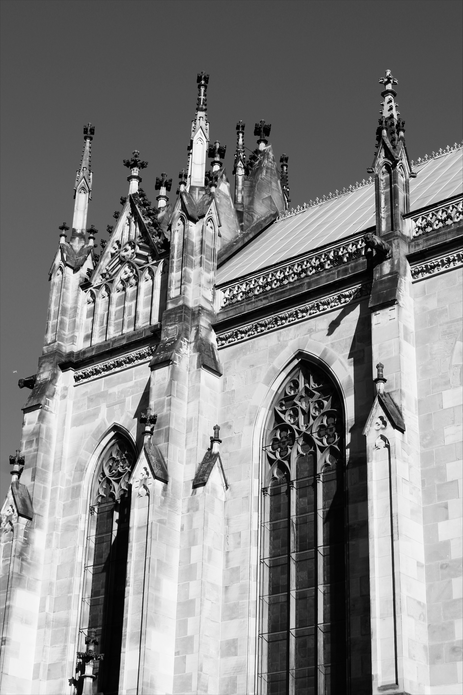

Nutzung
Die Elisabethenkirche gilt als eine der bedeutendsten neugotischen Kirchen der Schweiz [2]. Am 30. April 1994 wurde sie als erste Citykirche der Schweiz wiedereröffnet. Aufgrund eines Leihvertrags mit der Evangelisch-Reformierten Kirche wird das Gebäude vom ökumenischen Verein «Offene Kirche Elisabethen» genutzt. Die Kirche folgt dem Konzept der Werktagskirche und ist deshalb täglich geöffnet.
Bekannt ist die Kirche insbesondere für ihre Offenheit gegenüber Menschen unterschiedlicher Herkunft, Religion, sexueller Orientierung und Lebensform [3]. Sie war die erste Kirche der Schweiz, die ein Label für LGBTI-Freundlichkeit erhielt [4]. Die Elisabethenkirche ist ein Ort der Stille, des Gebets und der Seelsorge, zugleich aber auch ein Raum für Feiern, Konzerte, Partys und Ausstellungen. Damit verbindet sie spirituelle, kulturelle und soziale Angebote und richtet sich bewusst an alle Menschen [3][5].
Darüber hinaus engagiert sich die Offene Kirche Elisabethen für soziale Projekte. Seit 2004 dient die Kirche als Abgabestelle der Organisation «Tischlein deck dich», die Lebensmittel sammelt und an armutsbetroffene Menschen verteilt [6].
Hinzu kommen Projekte wie «FRAU-SEIN». Dieses Angebot schafft für geflüchtete und asylsuchende Frauen einen geschützten Raum für Begegnung, Austausch und Orientierung im Alltag. Die Kirche organisiert dabei freiwillige Helferinnen und Helfer, die beim Deutschlernen, bei Hausaufgaben oder bei der Vorbereitung auf Sprachprüfungen unterstützen. Auch Kinder werden mitgedacht: Für sie stehen eine Spielecke und Bücher zur Verfügung [7].
Nachhaltigkeit
Der Bezug zur Nachhaltigkeit zeigt sich in der Elisabethenkirche auf mehreren Ebenen.
Die Offene Kirche Elisabethen ist nicht nur ein Ort für Gottesdienste, sondern auch eine soziale Anlaufstelle für Menschen in schwierigen Lebenslagen. Sie bietet Unterstützung, Begleitung und Beratung an, etwa für geflüchtete und asylsuchende Frauen im Projekt «FRAU-SEIN». Dadurch wird soziale Nachhaltigkeit gestärkt: Die Angebote fördern den gesellschaftlichen Zusammenhalt, eröffnen neue Perspektiven und schaffen langfristig tragfähige Formen des Miteinanders.
Auch ökologische Nachhaltigkeit wird sichtbar. Aktionen wie die Frauenkleider-Tauschbörse im Jahr 2011 oder die Taschenbörse 2025 fördern das Wiederverwenden von Materialien, reduzieren Konsum und vermeiden Abfall [8][9]. Damit zeigt sich, dass die Kirche nicht nur sozial offen, sondern auch ökologisch sensibilisiert handelt.
Architektonische Bedeutung
Die Elisabethenkirche in Basel ist ein bedeutendes Beispiel neugotischer Architektur in der Schweiz [2]. Sie wurde zwischen 1857 und 1865 nach Plänen des Basler Architekten Ferdinand Stadler errichtet und war der erste grosse Kirchenneubau in Basel seit der Reformation. Der Bau wurde von der Familie Merian unterstützt; Christoph Merian selbst erlebte die Fertigstellung jedoch nicht mehr. Besonders prägend sind die dreischiffige Hallenkonstruktion, der 72 Meter hohe Turm mit Spitzdach sowie die sorgfältig gestalteten Glasfenster im Innenraum [10].
Durch ihre Architektur und ihre zentrale Lage ist die Elisabethenkirche bis heute eng mit dem städtischen Leben verbunden. Sie ist nicht nur ein religiöses Bauwerk, sondern auch ein bedeutender Bestandteil des Basler Kulturerbes.
Bilder
